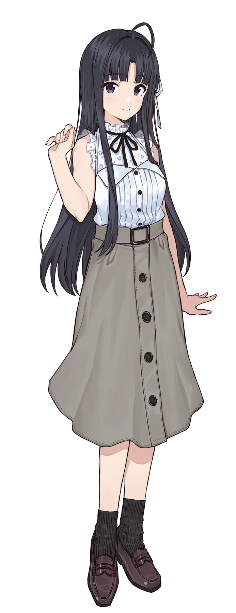

AVASUBARU486’S LITTLE CORNERPERSONAL PORTFOLIO — VOL. 01
こんにちは！欢迎来到我的小站 ✧
把喜欢的事，
写成自己的
小小宇宙。
我是邓嘉峰，也可以叫我 AvaSubaru486。
在代码里探索，在音乐里充电。
这里收藏着我的项目，还有那些闪闪发光的喜欢。
PLAY YOUR OWN STORY
好きなことを、好きなだけ。

MY FAVORITE DRUMMER安和 すばる♡AWA SUBARU / GIRLS BAND CRY
♪
给平凡的日子
加一点喜欢。
GIRLS BAND CRY非官方同人主题 / FAN-MADE
SCROLL TO DISCOVER ↓CODE. CREATE. REPEAT.
01 / SELECTED WORKS
我的项目✳
从一个想法开始，
慢慢把它变成可以打开的世界。
✧ 更多有趣的想法，正在路上。 MORE TO COME
HELLO, WORLD!